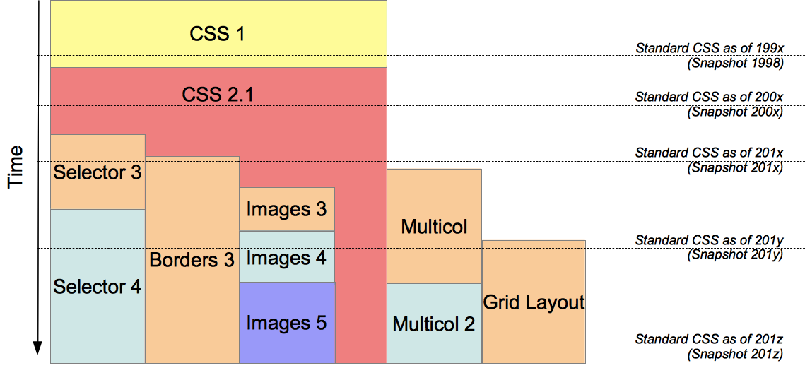
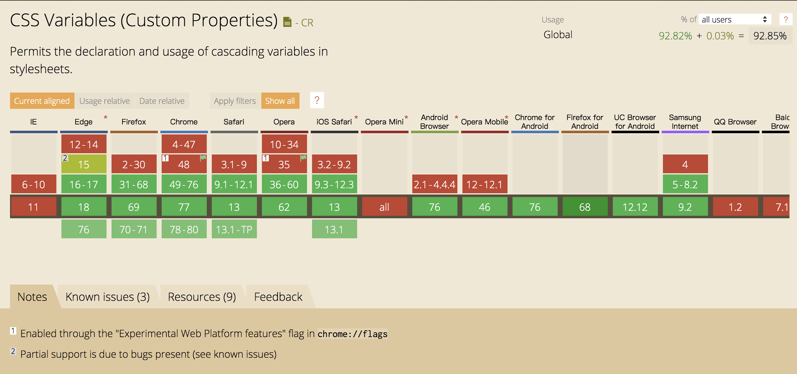
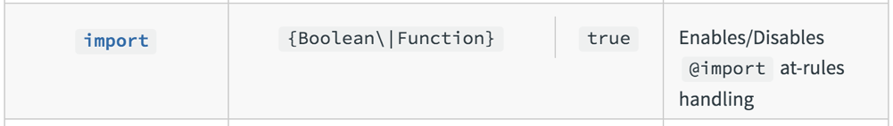

随着前端工程化的不断完善，CSS 预处理器已经成为项目中不可缺少的部分，很多人在项目技术选型阶段就会先选择一个 CSS 预处理器，绝大部分前端工程的脚手架也内置了一系列的 CSS 预处理的模版，大家已经习惯了享受 CSS 预处理器带来的书写代码的灵活流畅，反而将原生的 CSS 冷落在一旁。
可能许多前端开发人员依然觉得 CSS 预处理器属于比较新的技术，其实不然，最早的 CSS 预处理器 Sass 从 07 年诞生距今已有 12 年，相对较新的的 Stylus 也已发布 9 年了。
前端的技术栈发展突飞猛进，W3C 的 CSS 工作组也一直在持续从社区汲取营养，加快 CSS 的迭代。那么到现在为止，CSS 是否可以取代 CSS 预处理器的地位？CSS 预处理器会不会成为 CSS 过渡时期的产物呢？
W3C 介绍
CSS 是开放网络的核心语言之一，由 W3C 规范 实现跨浏览器的标准化。因此，在深入了解 CSS 规范更新进度之前，我们有必要先了解一下 W3C 及其规范制定流程。
W3C 也就是万维网联盟（World Wide Web Consortium），又称 W3C 理事会，是万维网的主要国际标准组织。为半自治非政府组织（quasi-autonomous non-governmental organisation）。由 蒂姆·伯纳斯-李（Tim Berners-Lee）于 1994年10月 于麻省理工学院 MIT 计算机科学与人工智能实验室（MIT／LCS）创立。
W3C 制定了一系列标准并督促网络应用开发者和内容提供者遵循这些标准。标准的内容包括使用语言的规范，开发中使用的导则和解释引擎的行为等等。W3C制定了包括 HTML、DOM、SVG、XML和 CSS 等的众多影响深远的标准规范。
W3C 规范制定流程
因为接下来我们需要谈到一些不同阶段的 CSS 规范，因此这里有必要简单介绍一下 W3C 的规范制定流程。
按照 W3C 的 Process Document，一个推荐标准的发展需要通过不同的阶段。

其中几个主要的阶段分别为：
- WD 工作草案（Working draft）
- CR 候选推荐标准（Candidate recommendation）
- PR 提案推荐标准（recommendation）
- REC W3C推荐标准（W3C recommendation）
篇幅有限，这里就不详细展开讲解 W3C 的标准流程了，如果想了解更多关于 W3C 标准流程与组织架构 的信息，可以查看W3C标准流程与组织架构。
CSS 的历史
HTML 和 CSS 是那么密不可分，以至于你可能会觉得它们是一起出现的。实际上，自 1989 年 Tim Berners Lie 发明互联网后的多年中，这个世界上都不存在一个名为 CSS 的事物（更别说 CSS 预处理器了），Web 的原始版本根本就没有提供一种装饰网页的方法。
HTML 规范虽然规定了网页中的标题、段落应该使用的标签，但是没有涉及这些内容应该以何种样式(比如大小、位置、间距、缩进等属性)呈现在浏览器中。
不过，在随后仅短短10年后，CSS就被一个现代的 Web 社区全面采用，这期间的发生了一系列有趣的故事，有兴趣的可以看一下 A Look Back at the History of CSS。
CSS1
于1994年，Håkon Wium Lie (哈肯·维姆·莱) 和 Bert Bos (伯特·波斯) 合作设计CSS。他们在1994年首次在芝加哥的一次会议上第一次展示了CSS的建议。
1996年12月 发表的 CSS1 的要求有第一版主要规定了选择器、样式属性、伪类 、对象几个大的部分。
CSS2
CSS2 在 1998 年 5月 由 W3C 发布，CSS2 规范是基于 CSS1 设计的，扩充和改进了很多更加强大的属性。包括选择器、位置模型、布局、表格样式、媒体类型、伪类、光标样式。
Cascading Style Sheets Level 2 Revision 1，通常被称为“ CSS 2.1” ，修复了 CSS 2中的错误，删除了支持不良或不能完全互操作的特性，并为规范增加了已经实现的浏览器扩展。 为了遵守 W3C 标准化技术规范的过程，CSS 2.1 在 Working Draft (WD) 状态和 Candidate Recommendation (CP) 状态之间来回了很多年。
CSS 2.1于 2004 年 2 月 25 日首次成为 Candidate Recommendation (CR)标准，但在 2005 年 6 月 13 日又回到 Working Draft (WD) 中进行进一步审查。 它于 2007 年 7 月 19 日回到 Candidate Recommendation (CP) 标准，然后在 2009 年更新了两次。 然而，由于作出了修改和澄清，它再次回到了2010年12月7日的 Last Call Working Draft 。
CSS3
CSS3 是层叠样式表（Cascading Style Sheets）语言的最新版本，旨在扩展CSS2.1。
CSS Level 2 经历了 9 年的时间（从 2002 年 8 月到 2011 年 6 月）才达到 Recommendation（推荐） 状态，主要原因是被一些次要特性拖了后腿。为了加快那些已经确认没有问题的特性的标准化速度，W3C 的 CSS Working Group 作出了一项被称为 Beijing doctrine 的决定，将 CSS 划分为许多小组件，称之为模块。这些模块彼此独立，按照各自的进度来进行标准化。其中一些已经是 W3C Recommendation 状态，也有一些仍是 Early Working Drafts（早期工作草案）。当新的需求被肯定后， 新的模块也会同样地添加进来。

从形式上来说，CSS3 标准自身已经不存在了。每个模块都被独立的标准化，现在标准 CSS 包括了修订后的 CSS2.1 以及完整模块对它的扩充，模块的 level（级别）数并不一致。可以在每个时间点上为 CSS 标准定义一个 snapshots（快照），列出 CSS 2.1 和成熟的模块。
W3C 会定期的发布这些 snapshots，如 2007, 2010, 2015 或 2017。
目前为止，还没有 level 超过 3 的模块被标准化，未来应该会有所改变。 不过有些模块，比如 Selectors（选择器）4 或 CSS Borders and Backgrounds（边框和背景）Level 4 早已拥有了 Editor’s Draft（编辑草案），即使它们还没达到 First Published Working Draft（初次发布工作草案）状态。
有一张图可以更加直观的表示当前 CSS3 Modules 的分类和状态：

问题：为什么没有 CSS4？
There is no single, integrated CSS4 specification, because it is split into separate “level 4” modules.
Level 4 不等于 CSS 4 ，如 CSS Custom Properties for Cascading Variables Module Level 1 总不能说它是 CSS1 吧。
CSS 预处理器
CSS 自诞生以来，基本语法和核心机制一直没有本质上的变化，在很长一段时间内，它的发展几乎全是表现力层面上的提升。
最开始 CSS 在网页中的作用只是辅助性的装饰，轻便易学是最大的需求；然而如今网站的复杂度已经不可同日而语，原生 CSS 已经让开发者力不从心。

当一门语言的能力不足而用户的运行环境又不支持其它选择的时候，这门语言就会沦为 “编译目标” 语言。开发者将选择另一门更高级的语言来进行开发，然后编译到底层语言以便实际运行。于是，在前端领域，天降大任于斯人也，CSS 预处理器应运而生。
百花齐放
CSS 预处理器是一个能让你通过预处理器自己独有的语法来生成 CSS 的程序。
市面上有很多 CSS 预处理器可供选择，且绝大多数 CSS 预处理器会增加一些原生 CSS 不具备或不完善的高级特性，这些特性让 CSS 的结构更加具有可读性且易于维护。当前社区代表的 CSS 预处理器 主要有一下几种：
- Sass：2007 年诞生，最早也是最成熟的 CSS 预处理器，拥有 Ruby 社区的支持和 Compass 这一最强大的 CSS 框架，目前受 LESS 影响，已经进化到了全面兼容 CSS 的 SCSS。
- Less：2009年出现，受 SASS 的影响较大，但又使用 CSS 的语法，让大部分开发者和设计师更容易上手，在 Ruby 社区之外支持者远超过 SASS，其缺点是比起 SASS 来，可编程功能不够，不过优点是简单和兼容 CSS，反过来也影响了 SASS 演变到了 SCSS 的时代，著名的 Twitter Bootstrap 就是采用 LESS 做底层语言的。
- Stylus：Stylus 是一个CSS的预处理框架，2010 年产生，来自 Node.js 社区，主要用来给 Node 项目进行 CSS 预处理支持，所以 Stylus 是一种新型语言，可以创建健壮的、动态的、富有表现力的 CSS。比较年轻，其本质上做的事情与 SASS/LESS 等类似，
优点
虽然各种预处理器功能强大，但使用最多的，还是以下特性：变量（variables），代码混合（ mixins），嵌套（nested rules）以及 代码模块化(Modules)。
接下来以 Sass 为例，展示一下这几个主要特性在预处理器中的实现：
Variables and Operators (+, -, *, /, %)
1 | $font-size: 10px; |
Mixins
1 | @mixin clearfix { |
Nesting
1 | // menu |
Modules
1 | @import './common'; |
缺点或不足
- 额外的编译配置
在写样式前需要做一些额外的编译配置工作，sass-node 安装以及编译的配置就能卡住一批前端新手。

- 编译成本
每次修改代码都需要重新编译,占用时间和 CPU。

学习成本
不同的 CSS 预处理器语法不同，增加学习成本。在同一个团队甚至项目里，可能同时使用了好几种样式预处理器。
1 | // Sass |
1 | // Less |
调试
在使用 CSS 预处理器时，我们通常会配置 SourceMap 来辅助调试，但即使这样，还是会碰到一些调试困难的情况：

回归 CSS
各种 CSS 预处理器在更新迭代的过程中，功能越来越繁杂花哨，但是绝大部分人用到的核心功能还是那几样：Variables、Mixing、Nested、Module，顶多再加上一些工具类函数。
我们既想要想要预处理器的优点，又不想要它带来的成本和缺点，有没有两全其美的办法？CSS 这么多年一直也在从社区汲取养分加速进化和迭代，我们能不能从 CSS 标准里面找到答案呢？
Variables in CSS
CSS 自定义属性（CSS Custom Properties)，又叫 CSS 变量（CSS Variable）,允许你自己在样式中声明变量，并通过 var() 函数使用。
CSS Custom Properties for Cascading Variables 规范在 2012 年 10 月首次作为 工作草案（WD） 提出，并在 2015 年 10 月到达 候选人推荐标准（CR）阶段。现在浏览器支持程度已经接近 93%。

CSS 变量定义及使用如下所示，可定义的类型极其丰富。
1 | /* declaration */ |
不同于 SASS 预处理器变量的编译时处理，CSS 变量是浏览器在运行时进行处理的，因此 CSS 变量会更加强大和灵活。
Operators
可以使用 calc() 进行计算
1 | :root { |
Generate Colors
可以用于通过 RGB 等函数生成和计算颜色：Generate Colors

CSS to JS
CSS 变量出现前，从 CSS 传值给 JS 非常困难，甚至需要借助一些 Hack 的手法。现在使用 CSS 变量，你可以直接通过 JS 获取变量值并进行修改：
1 | .breakpoints-data { |
1 | const breakpointsData = document.querySelector('.breakpoints-data'); |
Custom Theme
使用 CSS 变量，定制和动态切换网站主题非常简单方便：
首先定义好不同主题下的变量，然后正常书写样式即可。
1 | html { |
通过 JS 改变元素属性，动态切换主题：
1 | document.documentElement.setAttribute('data-theme', 'dark') |

更多高级用法可以参考：CSS custom properties (native variables) In-Depth
为什么变量的定义以 –开头？原因在这里：Let’s Talk about CSS Variables
Mixins in CSS
CSS 的有一个提案：CSS @apply Rule，按照该草案描述，用户可直接使用 CSS 变量存放声明块，然后通过 @apply rule 使用。
1 | :root { |
可惜这个提案已被废弃，具体废弃原因感兴趣的可以看看这篇文章：Why I Abandoned @apply。
尽管 Mixins 现在 CSS 还没有好的实现标准，但我们坚信迟早会有更优秀的规范涌现出来弥补 CSS 的这一块空白。
Nesting in CSS
CSS 里已经有 Nesting 的规范出现，尽管现在只处于 Editor’s Draft 阶段：CSS Nesting Module Level 3
可以看到按照 CSS Nesting Module ，Nesting 规范基本和预处理器一模一样。
1 | /* Dropdown menu on hover */ |
Module in CSS
其实 CSS 很早就有了模块化方案，那就是 @import，使用 CSS 的 @import 规则，可以引用其他的文件样式。这个特性从 IE 5.5 开始就被所有的浏览器支持，那为什么一直以来使用者寥寥无几呢，原因很多：
在一些老的浏览器有加载顺序的 bug
无法并行加载
导致过多的请求数量
……
不过现在大家的前端项目基本都会使用构建工具（Gulp、Webpack 等）打包后再上线，因此以上哪些缺点也就不存在了，而在 Webpack 的 css-loader 中，是可以配置是否开启 @import 的。

Selector Helpers
除了上面介绍的一些主要特性，CSS 还提供了一些全新的特性来帮助你更优雅的书写样式。
:matches pseudo-class
已更名为 :is()
:matches() CSS 伪类 函数将选择器列表作为参数，并选择该列表中任意一个选择器可以选择的元素，这对于以更紧凑的形式编写大型选择器非常有用，而且浏览器支持程度也已经接近 93%。
1 | /* 语法 */ |
想要了解更多详情可以查看规范：Selectors Level 4
@custom-selector
同时，你还可以您可以使用自定义选择器来定义可以匹配复杂选择器的别名。
1 | /* 语法 */ |
使用起来
尽管上述的 CSS 特性还处于不同阶段，浏览器的支持程度也不尽相同，但是使用 postcss-preset-env，你就可以抢先尝试 CSS 的最新特性。
当然，postcss-preset-env 的配置也十分简单，以 Webpack 为例：
1 | rules: [{ |
总结
经过一番梳理，我们发现，尽管 CSS 在社区的刺激下加快了更新迭代的速度，但是到目前为止，依然达不到 CSS 预处理器 VS CSS 的地步，只能说在使用 CSS 预处理器的同时，也可以在项目中尝试一些优秀的 CSS 新特性，即：CSS 预处理器 + CSS。
但是我们依然坚信，在 W3C 的推动下，随着 CSS 自身不断完善，CSS 预处理器终究会像当年的 CoffeScript 、Jade 一样，变成时代的过渡产物。到那时候，大家也就不用纠结各种 CSS 预处理器的环境配置和技术选型等，直接打开编辑器，就能愉快的书写样式。